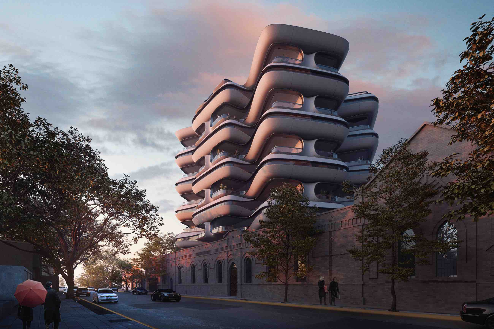
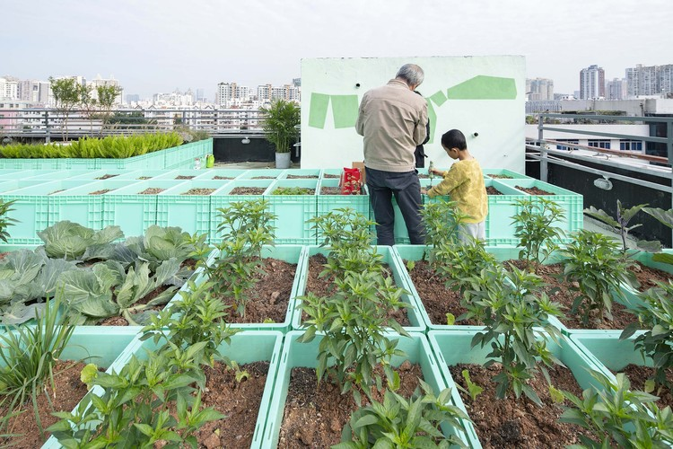

Vision for the Site
The proposed development for the land behind Acorn Street envisions a dynamic, sustainable mixed-use community hub. The existing front building will be retained and refurbished for a café and shared workspaces. The new structure behind it will feature retail units, micro-offices, modern apartments, and a public plaza with smart urban amenities.
Mission for the Site
To create an efficient, responsible, and long term value sustain Along with providing housing and commercial offering needs and satisfying the schooling materials, it is our goal to provide the client and its residents premium and sustainable mixed-use high-rise built effectively.
Rationale for Mixed-Use Design
Kelham Island is a culturally rich, emerging neighbourhood in Sheffield that thrives on diversity and innovation. Research indicates strong local demand for flexible commercial space and affordable city-centre living. This development meets that need by integrating residential, retail, and creative working environments.
Similar successful urban regeneration models include the Ancoats redevelopment in Manchester and the South Bank regeneration in Leeds. These examples confirm that thoughtful, inclusive design supports economic vitality and community growth.
Visual Concepts
 Financial Viability
| Category | Estimated Cost (£) |
|---|---|
| Demolition & Site Prep | £450,000 |
| Construction (Mixed Use) | £4,800,000 |
| Fit-Out & Finishes | £850,000 |
| Contingency | £400,000 |
| Total | £6,500,000 |
Based on projected rental and commercial lease revenues, the development is expected to yield a 9–11% ROI within the first 3 years.
Phased Development Strategy
- Phase 1: Renovate existing block for café and office space.
- Phase 2: Construct mixed-use block with apartments and shops.
- Phase 3: Finalise landscaping, public plaza, and rooftop garden.
Timeline Overview
| Stage | Duration |
|---|---|
| Feasibility & Design | Month 1 |
| Planning Submission | Months 2–3 |
| Demolition & Site Preparation | Months 4–5 |
| Main Construction | Months 6–18 |
| Completion & Hand-over | Month 19 |
Sustainability and Environmental Impact
- Targeting BREEAM “Excellent” certification
- Use of cross-laminated timber and low-carbon concrete
- Rainwater harvesting and greywater recycling
- Solar PV panels and green roof for biodiversity
- Smart building systems for energy efficiency
Site Constraints & Risk Considerations
- Access Restrictions: Limited entry via Acorn Street – mitigated through phased material delivery.
- Planning Delays: Addressed via early stakeholder engagement.
- Market Risk: Offset by multi-use flexibility and tenant mix.
- Utilities Disruption: Survey and pre-planning engagement with service providers planned.
Community Integration and Impact
This development respects Kelham Island’s creative identity by providing open, inclusive space for residents and small businesses. The public plaza encourages foot traffic and engagement, while community noticeboards and pop-up markets support local artisans. Accessibility and pedestrian flow are built into the master plan.
Site Logistics Plan
The construction logistics plan outlines the on-site processes to ensure smooth and safe operations throughout the development phase. Key considerations include:
- Access Routes: The primary access route for the piling rig and construction vehicles will be through Acorn Street. Temporary hardstanding will be established to support heavy equipment.
- Waste Management: Construction spoil will be removed through scheduled grab lorry rotations to minimize disruption.
- Safety Measures: A dedicated pedestrian route will be marked to avoid interaction with machinery.
- Equipment Storage: On-site material storage will be limited to minimize congestion, with just-in-time deliveries to reduce storage requirements.
Site Location
Acorn Street
Kelham Island
Sheffield
South Yorkshire
S3 8RD
United Kingdom
View on Google Maps
Map view showing the Kelham Rise development site located between Krynkl, Dun Works, and Acorn Street in Kelham Island, Sheffield.